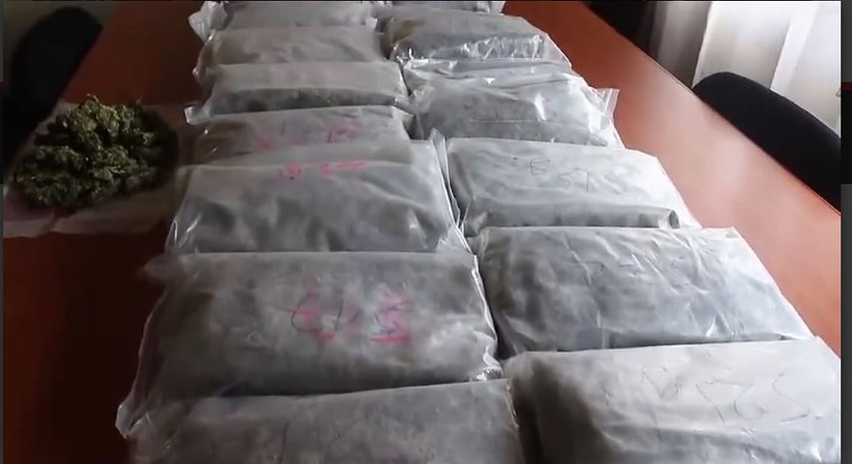

166 arrestations, deux accidents mortels et deux cadavres dans le bilan de la Pentecôte de la police nationale Antananarivo, 21 Mai, 18h07 - La police nationale présente son bilan des fêtes. Durant les deux jours de célébration de la Pentecôte, la police nationale a mobilisé 5 980 policiers dans toute l’île. Ils étaient 1 950 dans l’Analamanga. Verdict, la police indique avoir procédé à 166 arrestations dans toute l’île dont 56 dans l’Analamanga. “Les motifs des arrestations sont variés mais il y a eu violation de la loi”, explique le Contrôleur général de police Fanomezantsoa Rakotomalala, coordinateur en chef de l’inspection générale de la police nationale.
Trois Mauricens arrêtés pour trafic de drogue à Madagascar. Une opération menée par la brigade de recherche de la gendarmerie nationale de Madagascar a réalisé un gros coup de filet en procédant à l'arrestation de trois Mauriciens, suivant l'arrestation du Malgache Juveno Nafompona en possession de 9,822 kilos de skunk, une variété de cannabis. Son arrestation a abouti à celle de deux frères Morvant, Kenjil lssac et kenny, ågés respectvemnent de 33 et 37 ans et Avoola Oddy, âgé lui de 43 ans. Les trois Mauriciens originaires de Baie du Tombeau, habitent à Ivandry, Antananarivo. La valeur de la drogue saisie est estimée à Rs 10 millions. Cette enquête a démarré le 15 mai dernier lorsque les policiers de la brigade de recherche se sont rendus à Toamasina. C'est ainsi que Juveno Nafompona qul faisait route vers Tananarive venant de Tamatave avait été appréhende après que cette drogue a été saisie. Ces enquêteurs ont également procédé à la saisie de deux voitures, une Mazda BT 50 et une Tigan, de même qu'un bateau. Les trois Mauriciens qui sont soupgonnés d'être impliqués dans ce réseau de drogue ont eté arrêtés par suite, ils sont tous detenus à la maison de force de Tsiafahy. La gendarmerie nationale a lancé un appel à témoins à tous ceux qui ont des informations sur cette affaire de venir de l'avant. C'est la première fois que la skunk, une drogue dure est saisie sur le sol malgache. Elle représente un poison pour la jeunesse malgache.